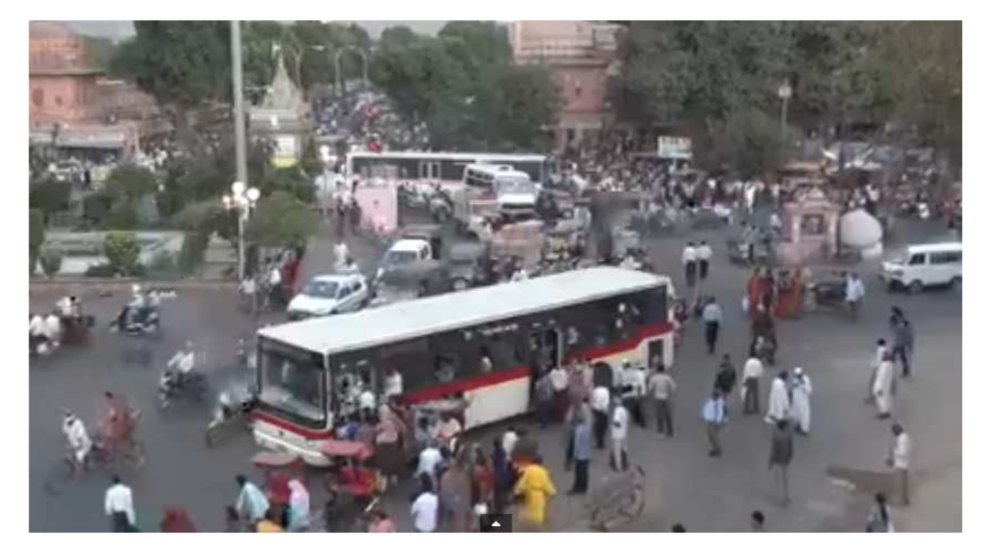
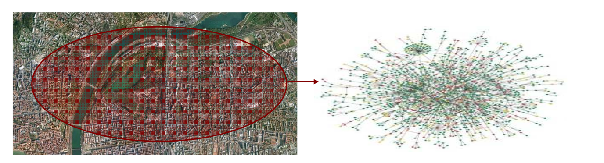

§ MobMod: Introduction to Mobility Modelling
The fundamental abstraction that is needed to understand inter-connected phenomena is a way to describe the different relationships between the various participating entities. For example, imagine a scenario where a disaster management Mobile Ad-hoc network of drones is deployed to triangulate sensitive points, the key to successful execution lies in how these various drones interact and share knowledge. Thus, the
Network that is shared between these drones - or,
Nodes - would have a certain way of establishing communication and its performance can be analyzed in terms of various performance parameters. One central aspect of analyzing this network would be the simulating how these nodes might move and what kind of impact that might have on the network. It is exactly for this kind of analysis and understanding that we create
Mobility Models: They allow mimicking the behavior of mobile nodes when network performance is simulated. The simulation results are strongly correlated with the mobility model.
§ Case of Connected Cars
The way this analysis fits into the driving scenario is in terms of modeling the uncertainty in the traffic scenario. In the case of autonomous driving, the limitation for an individual agent is more from the side of the sensors. Usually, we would use cameras and Radars to work stuff out, but Radars can only see around 10m. So, how would this agent work in a highly uncertain scenario? Imagine a car driving on an Indian road in a 2-tier city, with pedestrians walking on all sides and multiple vehicles going in all directions.

One way to approach this solution would be to shift a bit of the load from the individual agent to the network. This could be done if the cars are connected through a network based on 4G/5G. Thus, in this case, we could view the cars as nodes communicating with each other and moving in some way. For each car, the regular functions - movement, mapping, obstacle detection, and avoidance, etc. - would be performed on the edge of this network while the co-ordinating function would be performed on the network. Thus, the issue of modeling the Mobility becomes important in this case. Modeling of the traffic flow, especially in the case of more uncertain scenarios, becomes extremely important.
§ Need for Modelling
- The performance evaluation of such a large-scale network is bounded by simulation: Raw analytical analysis is too complex while conducting experiments is too expensive
- Real-world traces are hard to find, either because they do not exist or are not publicly available (E.g City-Data).
- Trivial representations of mobility might bias the simulation results. The available races might not represent real-world situations very effectively, and might have a lot of residual effects that might render them useful to represent only specific conditions, and thus, not generalizable.
§ The safe and sustainable mobility conundrum
Now if we were to go about this modeling, one of the central issues that would come up is that of optimality. The optimization here would be in terms of maximizing the usage of the road capacity and the driver and pedestrian safety. To better understand this, imagine we implement a model where a car is made to drive slow to increase safety. Now, this is fine for the individual driver, since the car always maintains a safe distance from the car in front of it. However, two problems come-up here:
- If the safe distance is too large, then a pedestrian might walk-in between leading to the car to halt
- The speed of the car is slow and so, the general traffic speed is also slow. This might create problems on traffic bottlenecks, like a 7 lane highway leading to a 2 lane road, etc.
If we use the same policy on high-volume traffic conditions, then slow speeds nad sudden halts can easily lead to shockwave propagation and Ghost Jams. Let us formalize this by looking at traffic in terms of flow
Flow=Density.Speed
Thus, looking at this model we can see some safe directions to analyze this situation would be by controlling this flow through either reducing the speed or maybe keeping it and reducing the flow through density control. But more importantly, if we were to model the mobility by simulating this condition, we could develop interesting ways of cooperative navigation.
§ Vehicular Models
To analyze this network, we start looking at vehicles as nodes. Thus, the traffic becomes a MANET and our methods of simulation enable us to better understand this network.

The impact of mobility is even more pronounced in the case of vehicular networks. The three factors that differentiate these networks from other networks are:
- The speed of each node is not bounded in small intervals, and is not smooth. It is highly variable
- The movement is far from random. Thus, we cannot directly sample from standard distributions in realistic scenarios
- The nodes do not move independently, and in fact, have strong reciprocal dependencies
Consequently, the abstractions that this network viewpoint offers can be on three levels:
- Vehicular Traffic Model: Abstraction of the large scale trajectories employed by the vehicles
- Vehicular Flow Model: Abstractions of the physical inter-dependencies
- Vehicular Driver Model: Abstractions of the actions of individual nodes, like breaks, turns, etc.